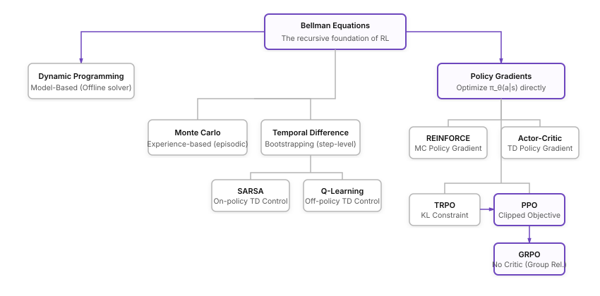

Notes Series • 7 Chapters
Reinforcement Learning Notes
Personal study notes tracing RL from Bellman equations to PPO and GRPO.
Personal study notes tracing reinforcement learning from Sutton & Barto's first principles to modern policy alignment (PPO, GRPO).
Prerequisites: Calculus (derivatives, chain rule), linear algebra (vectors, matrices),
probability (expectations, distributions), and basic Python.
Series Concept Map

Method Evolution Tree

Chapters
1
The RL Problem — What Are We Even Doing?
Three paradigms of ML. The agent-environment interface. Policy, reward,
value, model. A tic-tac-toe case study showing temporal difference learning in action.
Trial & Error
Value Functions
TD Backing Up
2
Bandits & The Exploration Problem
The purest form of exploration vs. exploitation. Action-value methods,
ε-greedy strategy, and the 10-armed testbed with full Python implementation.
Multi-Arm Bandits
ε-Greedy
Sample Average
3
MDPs, Value Functions & Bellman Equations
The formal mathematical framework. Markov property, returns, discounting.
Full derivation of the Bellman equation and Bellman optimality equation.
MDPs
Bellman Equations
Optimal Policies
4
Dynamic Programming — When You Know the World
Policy evaluation, policy improvement, policy iteration, and value
iteration. Jack's Car Rental as a worked example. Why DP fails at scale.
Policy Iteration
Value Iteration
Model-Based
5
Learning from Experience — MC, TD & Control
Model-free methods. Monte Carlo vs. temporal difference. SARSA and
Q-learning (cliff walking). Function approximation and semi-gradient SARSA.
Monte Carlo
TD Learning
Q-Learning
Function Approx.
6
Policy Gradients — Optimizing the Policy Directly
The policy gradient theorem. REINFORCE with baseline. Actor-critic.
Generalized Advantage Estimation. TRPO's trust regions. PPO's clipping mechanism.
REINFORCE
Actor-Critic
GAE
TRPO
PPO
7
RL Meets LLMs — PPO, GRPO & Reasoning
Mapping RL to language generation. Reward modeling and RLHF. PPO's
4-model memory bottleneck. GRPO: eliminating the critic. Outcome vs. process supervision.
RLHF
GRPO
LLM Alignment
DeepSeek-R1